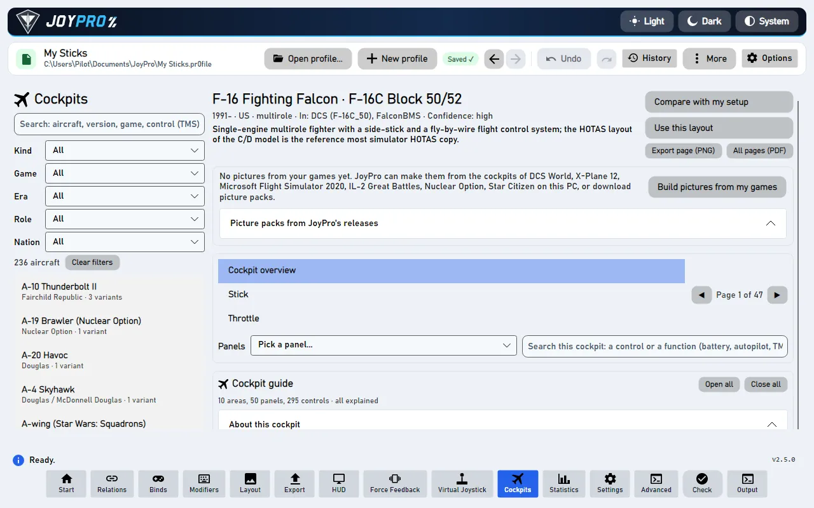
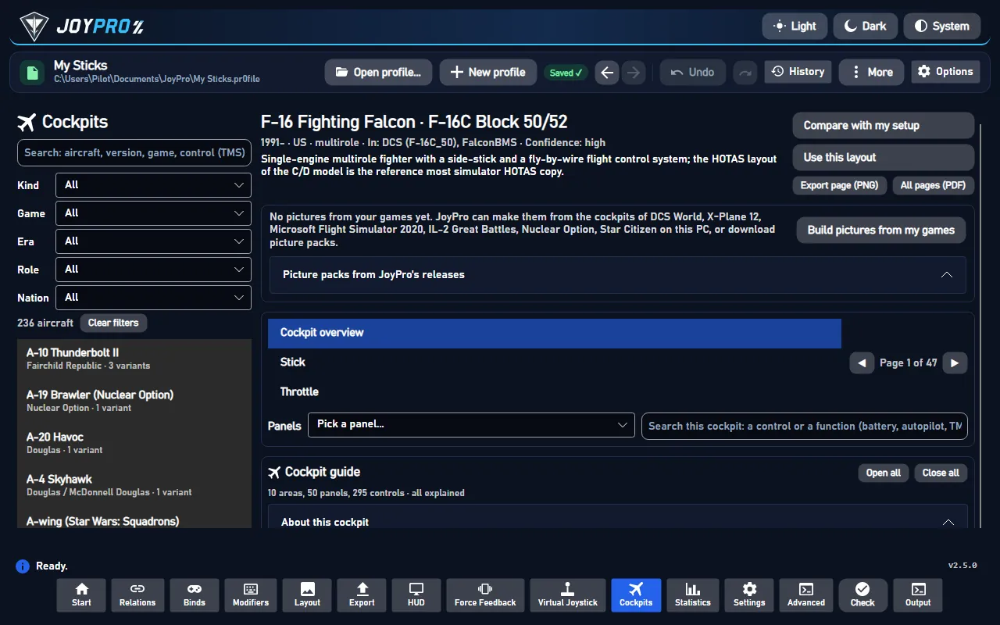
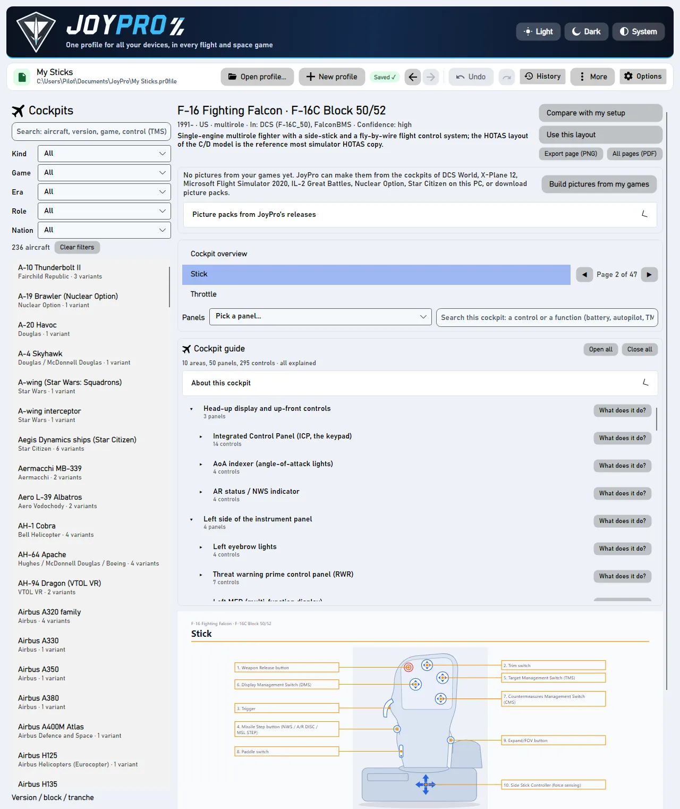
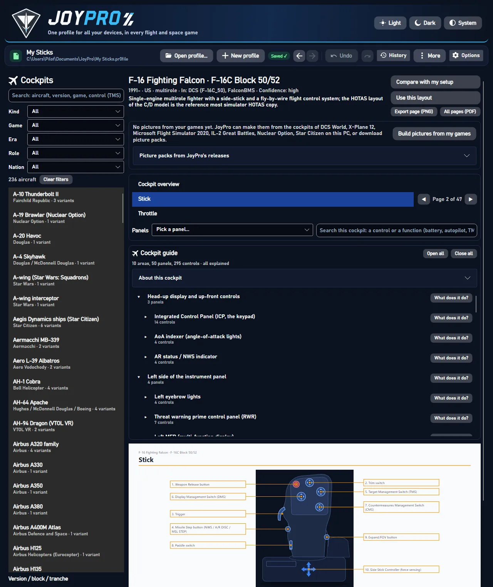

#Clear filters
ButtonwrittenEmpties the search box and sets Kind, Game, Era, Role and Nation back to "All": the whole list of aircraft shows again.
Source CockpitsView.axaml:39 · ClearFiltersCommand in CockpitsViewModel.cs
The Cockpits page is a reference of real and fictional cockpits, laid out like the cockpit chapter of a flight manual: pick an aircraft, its version and seat, and read the overview, a page per grip (stick, throttle, cyclic, collective) with the HOTAS table, and a page per panel. It changes nothing in your profile or your games; it helps you decide which function goes on which button, and Use this layout opens the setup wizard with an aircraft's stick and throttle layout.


A drawing of the grip with numbered callouts and the HOTAS table: one row per control and direction (press, long press, hold), one column per mode (NAV, A-A, A-G; or TGP, HUD). This is how the real aircraft uses each button, a good model for your own binds.


Where your installed games have the aircraft, Build pictures from my games draws the game's cockpit with every clickable control numbered and named as the game names it. For aircraft you do not own, JoyPro offers picture packs to download, and for cockpits no game has, verified photos with JoyPro's labels on top.
Nothing is written into a game. Compare with my setup marks in the HOTAS tables which functions your open profile already binds for that game and aircraft, so you see at a glance what is still missing.
Documents\JoyPro2\Cockpits; Open folder opens it.flowchart TD
V["A variant is opened"] --> G{"Pictures from<br/>your games?"}
G -->|yes| P["Game pictures: overview,<br/>grips, one page per panel"]
G -->|no| K{"Picture pack in<br/>JoyPro's releases?"}
K -->|yes| O["Offer: Download / Not now<br/>(Settings > Privacy: ask, always, never)"]
O --> P
K -->|no| F{"Verified photos<br/>known?"}
F -->|yes| D["Download photos: a page per photo<br/>with JoyPro's numbered labels"]
F -->|no| J["JoyPro's own drawings"]
Area (left console, main panel, overhead) > panel ("ENG & JET START control panel") > control (every switch, button and knob with its positions). A click on a control opens the page that shows it and rings its callout; a click on a callout selects it in the guide. Open all / Close all open or close every area.
CockpitsViewModel.cs (picker, filters, compare, use layout), CockpitsViewModel.Pages.cs (manual
pages, export), CockpitsViewModel.Guide.cs, CockpitsViewModel.Pictures.cs, CockpitsViewModel.PicturePacks.cs,
CockpitsViewModel.VerifiedPhotos.cs; the page view ManualPageView.DB\Cockpits\*.json (aircraft, variants, controls, panels), DB\Cockpits\drawings, line-drawings,
guide, photo-labels (one file per verified photo).<data>\GameData\CockpitPictures\<game>\<aircraft> (pictures.json, index.json),
verified photos in <data>\CockpitPhotos\<aircraft>, linked photos in the download cache; the photo answers with the
device photo answers (cockpit:<aircraft>).engine cockpits (list, search, get --json for Use this layout, compare for Compare with my
setup, render for PNG/PDF, pictures build|status|check, photos). Reference: cockpits,
privacy.Empties the search box and sets Kind, Game, Era, Role and Nation back to "All": the whole list of aircraft shows again.
Stops the picture pack download that is running. A pack that was not complete is not installed; packs already finished stay.
Downloads every picture pack of this game from JoyPro's releases (shows the total size and asks first). Each pack is checked against its checksum and unpacked into your game data; the manual pages of those aircraft then show the game's pictures.
Stops downloading this cockpit's verified photos. Photos already downloaded and checked stay on this PC.
Opens the folder the PNG and PDF exports went to (Documents\JoyPro2\Cockpits) in Explorer, creating it if needed.
Hides the marks of Compare with my setup: the HOTAS tables and the guide show the cockpit without your binds again.
Opens or closes the explanation of this control in the cockpit guide: what it does in plain words, "In the bigger picture" (when and why the pilot uses it), its positions, the game's name for it and the commands to bind it with.
Answers the photo question of this aircraft: Yes loads its photo links now, No does not, Always for cockpits loads photos of every aircraft without asking, Never stops all cockpit photos (Settings > Privacy changes it back). Show the photos of this aircraft after a No is the Yes.
Loads this photo again after it could not be loaded (the site was busy or refused for a moment).
Opens the page the photo is published on (with its author) in your browser.
Opens this source (a manual, a reference page) in your browser; the address is the tooltip.
Compares your open profile with this variant: every function in the HOTAS tables that one of your relations holds for
its games and aircraft gets a ✓ with the relation and input, and a line says how many functions are covered. Reads only;
needs an open profile. Hide takes the marks away. Engine: engine cockpits compare.
Opens the setup wizard with this variant: its aircraft goes to the top of the priority list (when it is in one of the
chosen games) and the plan places its functions as on this variant's stick and throttle, instead of the aircraft's
first variant. A wizard you left open before Apply takes it too. Nothing in your profile or your games changes until
Apply in the wizard. Engine: engine cockpits get <aircraft> <variant> --json.
Saves the shown page as a PNG in your drawing style (Settings > Drawings) to Documents\JoyPro2\Cockpits, named after
the aircraft, variant and page; a file of the same name is replaced. Open folder opens it.
Saves every page of this variant as one PDF in your drawing style (Settings > Drawings) to
Documents\JoyPro2\Cockpits. Open folder opens it.
Renders the cockpits of your installed games on this PC, every clickable control numbered and named as the game names
it. It takes a few minutes per game; the pictures are kept with your game data, never in a game folder, and the manual
pages use them. Engine: engine cockpits pictures build.
Downloads the offered picture pack(s) from JoyPro's releases with a progress bar (Cancel stops). Each pack is checked against its checksum and unpacked into your game data; the manual pages of those aircraft then show the game's pictures.
Closes the offer without downloading; JoyPro does not offer these packs again in this session.
Looks up the picture packs of every aircraft of your installed games that JoyPro knows and offers the ones not on this PC yet with their total size; Download starts it.
Downloads every verified photo of this cockpit from its original address (or the web archive's copy), checks each against JoyPro's record and keeps it on this PC. The click also counts as your yes to this aircraft's photos; the manual then has a page per photo with JoyPro's numbered labels.
Goes to the previous page of the manual (stops at the first one).
Goes to the next page of the manual (stops at the last one).
Opens every area and panel of the cockpit guide, so every control is listed.
Closes every area of the cockpit guide: only the areas are listed; open one to see its panels.
Opens or closes this area or panel of the cockpit guide. While a search filters the guide, the click clears the filter.
Opens the photo itself in your browser at full size, to look at it or save it from there.
The feature documentation behind this page, generated from the repository:
26 controls, read from the program's source: 26 written, 0 with the facts from the source (tooltip, code comment, engine call), 0 still to be expanded.
Empties the search box and sets Kind, Game, Era, Role and Nation back to "All": the whole list of aircraft shows again.
Source CockpitsView.axaml:39 · ClearFiltersCommand in CockpitsViewModel.cs
Tooltip Marks every function your open profile has a relation for (in the games and aircraft of this variant)
Compares your open profile with this variant: every function in the HOTAS tables that one of your relations holds for
its games and aircraft gets a ✓ with the relation and input, and a line says how many functions are covered. Reads only;
needs an open profile. Hide takes the marks away. Engine: engine cockpits compare.
Source CockpitsView.axaml:76 · CompareCommand in CockpitsViewModel.cs
Tooltip Hands this aircraft's stick and throttle layout to the setup wizard (engine cockpits get ... --json)
Opens the setup wizard with this variant: its aircraft goes to the top of the priority list (when it is in one of the
chosen games) and the plan places its functions as on this variant's stick and throttle, instead of the aircraft's
first variant. A wizard you left open before Apply takes it too. Nothing in your profile or your games changes until
Apply in the wizard. Engine: engine cockpits get <aircraft> <variant> --json.
Engine engine cockpits get
Source CockpitsView.axaml:78 · UseLayoutCommand in CockpitsViewModel.cs
Tooltip This page as a picture in your drawing style (Settings > Drawings)
Saves the shown page as a PNG in your drawing style (Settings > Drawings) to Documents\JoyPro2\Cockpits, named after
the aircraft, variant and page; a file of the same name is replaced. Open folder opens it.
Source CockpitsView.axaml:81 · ExportPageCommand in CockpitsViewModel.Pages.cs
Tooltip Every page of this variant as one PDF
Saves every page of this variant as one PDF in your drawing style (Settings > Drawings) to
Documents\JoyPro2\Cockpits. Open folder opens it.
Source CockpitsView.axaml:82 · ExportAllPagesCommand in CockpitsViewModel.Pages.cs
Tooltip Renders the cockpits of your installed games ({0}) with every clickable control numbered and named as the game names it. Made on this PC, kept with your game data.
Renders the cockpits of your installed games on this PC, every clickable control numbered and named as the game names
it. It takes a few minutes per game; the pictures are kept with your game data, never in a game folder, and the manual
pages use them. Engine: engine cockpits pictures build.
Source CockpitsView.axaml:93 · BuildPicturesCommand in CockpitsViewModel.Pictures.cs
Tooltip Downloads the cockpit pictures JoyPro rendered from the game (a release asset on GitHub), checks them and keeps them with your game data
Downloads the offered picture pack(s) from JoyPro's releases with a progress bar (Cancel stops). Each pack is checked against its checksum and unpacked into your game data; the manual pages of those aircraft then show the game's pictures.
Source CockpitsView.axaml:106 · DownloadOfferedPacksCommand in CockpitsViewModel.PicturePacks.cs
Closes the offer without downloading; JoyPro does not offer these packs again in this session.
From the code "Not now": not asked again for these packs in this session.
Source CockpitsView.axaml:108 · DismissPackOfferCommand in CockpitsViewModel.PicturePacks.cs
Stops the picture pack download that is running. A pack that was not complete is not installed; packs already finished stay.
Source CockpitsView.axaml:113 · CancelPackDownloadCommand in CockpitsViewModel.PicturePacks.cs
Tooltip The packs of every aircraft of your installed games that JoyPro knows; you see the total size first
Looks up the picture packs of every aircraft of your installed games that JoyPro knows and offers the ones not on this PC yet with their total size; Download starts it.
Source CockpitsView.axaml:122 · DownloadMyAircraftPacksCommand in CockpitsViewModel.PicturePacks.cs
Downloads every picture pack of this game from JoyPro's releases (shows the total size and asks first). Each pack is checked against its checksum and unpacked into your game data; the manual pages of those aircraft then show the game's pictures.
Source CockpitsView.axaml:135
Tooltip Downloads every photo of this cockpit from its original address (or the web archive's copy), checks each against JoyPro's record and keeps it on this PC
Downloads every verified photo of this cockpit from its original address (or the web archive's copy), checks each against JoyPro's record and keeps it on this PC. The click also counts as your yes to this aircraft's photos; the manual then has a page per photo with JoyPro's numbered labels.
Source CockpitsView.axaml:152 · DownloadPhotosCommand in CockpitsViewModel.VerifiedPhotos.cs
Stops downloading this cockpit's verified photos. Photos already downloaded and checked stay on this PC.
Source CockpitsView.axaml:158 · CancelPhotoDownloadCommand in CockpitsViewModel.VerifiedPhotos.cs
Opens the folder the PNG and PDF exports went to (Documents\JoyPro2\Cockpits) in Explorer, creating it if needed.
Source CockpitsView.axaml:171 · OpenExportFolderCommand in CockpitsViewModel.Pages.cs
Hides the marks of Compare with my setup: the HOTAS tables and the guide show the cockpit without your binds again.
Source CockpitsView.axaml:175 · ClearCompareCommand in CockpitsViewModel.cs
Tooltip Previous page
Goes to the previous page of the manual (stops at the first one).
Source CockpitsView.axaml:198 · PreviousPageCommand in CockpitsViewModel.Pages.cs
Tooltip Next page
Goes to the next page of the manual (stops at the last one).
Source CockpitsView.axaml:200 · NextPageCommand in CockpitsViewModel.Pages.cs
Tooltip Opens every area and panel
Opens every area and panel of the cockpit guide, so every control is listed.
Source CockpitsView.axaml:239 · ExpandAllGuideCommand in CockpitsViewModel.Guide.cs
Tooltip Shows the areas only
Closes every area of the cockpit guide: only the areas are listed; open one to see its panels.
From the code Close all: every area closed, only the areas are listed.
Source CockpitsView.axaml:240 · CollapseAllGuideCommand in CockpitsViewModel.Guide.cs
Opens or closes this area or panel of the cockpit guide. While a search filters the guide, the click clears the filter.
Source CockpitsView.axaml:259
Opens or closes the explanation of this control in the cockpit guide: what it does in plain words, "In the bigger picture" (when and why the pilot uses it), its positions, the game's name for it and the commands to bind it with.
Source CockpitsView.axaml:267 · setting ShowDetails
Answers the photo question of this aircraft: Yes loads its photo links now, No does not, Always for cockpits loads photos of every aircraft without asking, Never stops all cockpit photos (Settings > Privacy changes it back). Show the photos of this aircraft after a No is the Yes.
Source CockpitsView.axaml:328 · PhotoAnswerCommand in CockpitsViewModel.cs
Loads this photo again after it could not be loaded (the site was busy or refused for a moment).
Source CockpitsView.axaml:354 · TryAgainCommand in CockpitsViewModel.cs
Tooltip Opens the photo itself in your browser (full size, to save it from there)
Opens the photo itself in your browser at full size, to look at it or save it from there.
From the code The photo itself in the browser (full size, to save it from there).
Source CockpitsView.axaml:355 · OpenPhotoCommand in CockpitsViewModel.cs
Opens the page the photo is published on (with its author) in your browser.
Source CockpitsView.axaml:357 · OpenPageCommand in CockpitsViewModel.cs
Opens this source (a manual, a reference page) in your browser; the address is the tooltip.
Source CockpitsView.axaml:377 · OpenCommand in CockpitsViewModel.cs